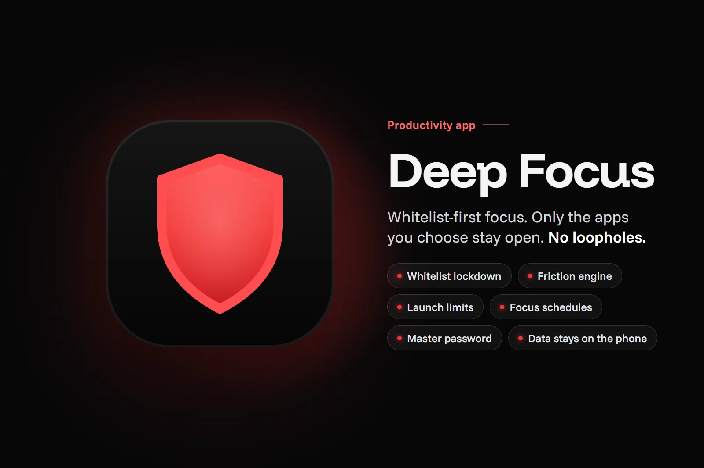

Deep Focus is a productivity app built to break phone addiction with intentional friction. Screen-time apps count hours or show warnings that are easy to skip at the moment willpower is lowest. Deep Focus stops the habit loop before it starts.
All work
Mobile app, productivity
Deep Focus
A whitelist-first focus app that locks the whole phone during a focus session, so only the tools you choose stay open.

What it is
Who it serves
Students protecting their study hours, knowledge workers and creators who need long stretches of deep work, people with ADHD who need firm outside boundaries, and anyone who unlocks their phone without thinking.
A whitelist, not a blacklist
Most blockers ban a list of apps, and the mind simply moves to the next distraction. Deep Focus does the opposite: when a session starts the whole phone is locked, and only the apps you picked for the task stay open, such as Phone, Maps or Calculator.
An app installed during a session is blocked automatically, because it is not on the list. There are no loopholes.
What it does
- A wait, a math problem or a typing prompt before a guarded app opens
- Daily time limits and launch limits for each app
- Focus modes that switch on by themselves on a schedule
- A master password you can hand to a friend, so a session cannot be broken early
- Screen-time stats that are processed and stored only on the phone
Built to grow with its community
Students get a free month of Premium, users who invite two paying friends unlock Premium for free, and creators get an affiliate dashboard for the people they bring in.
The walkthrough
We are happy to walk you through this project in a call: the problem it solves, the decisions behind the interface, and how it was built.